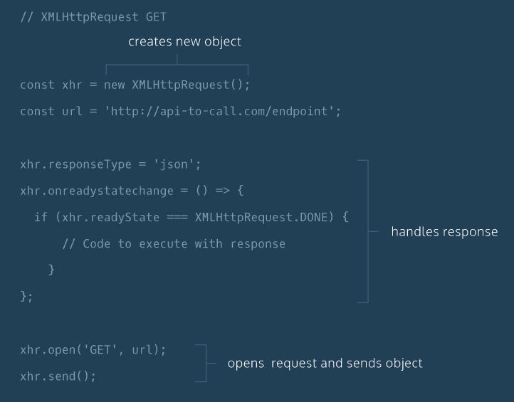

Enter a Word
NOTE...
Some say fetch requests are better than the below.
The four most commonly used types of (XMLHttpRequest) HTTP requests are GET, POST, PUT, and DELETE.
You can see an MDN document on HTTP Request Methods
here
With a GET request, we’re retrieving, or getting, information from some
source (usually a website).
For a POST request, we’re posting information to a source that will process the
information and send it back.
For now this covers GET and POST requests, PUT and DELETE may be covered later.
JavaScript uses an event loop to handle asynchronous function calls.
When a program is run, function calls are made and added to a stack.
The functions that make requests that need to wait for servers to respond
then get sent to a separate queue.
Once the stack has cleared, then the functions in the queue are executed.
Web developers use the event loop to create a smoother browsing experience by
deciding when to call functions and how to handle asynchronous events.
my course explored one system of technologies called
Asynchronous JavaScript and XML, or AJAX.
You can also read the MDN documentation on Event Loops
Here
and you can read an Introduction to XML - an MDN documentation
Here
Codeacademy have created this image as a basic example of the XHR GET commands

const xhr = new XMLHttpRequest();
the xhr can be called anything but calling it
xhr is the accepted name.
// xhr is the accepted name but can be anything
const xhr = new XMLHttpRequest();
// the url is a string
const url = "https://api-to-call.com/endpoint";
// set this to json as it is how the
// response is going to be formatted
xhr.responseType = "json";
// this property defines a function to be
// executed when the readyState changes.
xhr.onreadystatechange = () => {
// this checks to see if
// the request has finished
if (xhr.readyState === XMLHttpRequest.DONE) {
// return the response property
return xhr.response;
}
};
// open creates a new GET request
xhr.open("GET", url);
// send the request
xhr.send();
// NOTE
// I think that with the xhr.open("GET", ...) the
// xhr.send() will always have no parameter, ie
// just xhr.send()
// BUT
// If using xhr.open("POST", ...); then
// xhr.send() will have a parameter eg
// xhr.send(data);
You can see documentation for the Datamuse API
Here
This example will display up to 10 words that rhyme your chosen word (sort of)
It also uses the
/HTTPRequest/main.js
/HTTPRequest/helperFunctions.js
files.
The previous pane's program has the code for setting up the
const xhr = new XMLHttpRequest(); inside the main.js file.
It creates the myString string and passes it back to be used in the
xhr.open("GET", myString);
command.
The format of myString was, eg...
(url) followed by (key) followed by (value):
The url = "https://api.datamuse.com/words?" - url of the Datamuse API
The key = "rel_rhy=" - which is defined by the API call (Datamuse API)
The value = "the word you entered on the form" - word to rhyme (eg 'chair')
For example:
myString =
"https://api.datamuse.com/words?rel_rhy=chair"
Note
You must NOT use spaces between the url, key and/or value as it will most likely fail to run.
If you need spaces then you MUST send '%20' where you want the space as
%20 = space in XHTTPRequest(s).
Maybe use value.replace(/ /g, "%20") to change spaces
A query string contains additional information to be sent with a request.
The Datamuse API allows us to retrieve more specific data with query strings attached to the request URL.
A query string is separated from the URL using a ? character.
After ?, you can then create a parameter which is a key value pair joined by a =
Eg...
'https://api.datamuse.com/words?key=value'
If you want to add an additional parameter you will have to use the & character to
separate your parameters. Like so:
'https://api.datamuse.com/words?key=value&anotherKey=anotherValue'
or
'https://api.datamuse.com/words?key=value&anotherKey=another%20Value'
The files used for this example are as follows:-
rebrandly_HTTPRequests.html
/HTTPRequest/rebrandly_helperFunctions.js
/HTTPRequests/rebrandly_main.js
To run this example
Click Here